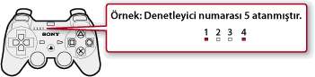

Oyun > PlayStation®3 formatındaki yazılımı oynatma > Oyun oynamak için ayarları yapma
Oyun oynamak için ayarları yapma
Oyun oynama sırasında kontrol cihazı ayarını ayarlayabilirsiniz. Oyun oynama sırasında kablosuz kontrol cihazındaki PS düğmesine basın ve sonra  (Ayarlar) >
(Ayarlar) >  (Aksesuar Ayarları) öğesini seçin.
(Aksesuar Ayarları) öğesini seçin.
Kontrol Cihazını Yeniden Ata
Kontrol cihazı numara atamasını değiştirebilirsiniz. Kontrol cihazı numarası yazılımla belirtilirse, uygun kontrol cihazı numarasını atayın.
İpucu
Geçerli olarak atanan kontrol cihazı numarasını, kontrol cihazının en üstündeki bağlantı noktası göstergesinin üzerinde görebilirsiniz. Beş ve yedi numaraları arasında, yanan göstergeler üzerindeki eklenen toplam numara kontrol cihazı numarasıdır.

Kontrol Cihazı Titreşim İşlevi
Titreşim işlevini açabilir veya kapatabilirsiniz. Bu seçenek yalnızca PS3™ sisteminin titreşim işlevini destekleyen bir kontrol cihazı kullanılırken kullanılabilir.
İpuçları
- Bu ayar titreşim işlevini destekleyen bağlı tüm kontrol cihazları için etkindir.
- Bu seçenek [Kapalı] olarak ayarlanırsa, oyunda titreşim işlevi açılsa bile kontrol cihazı titreşmez.